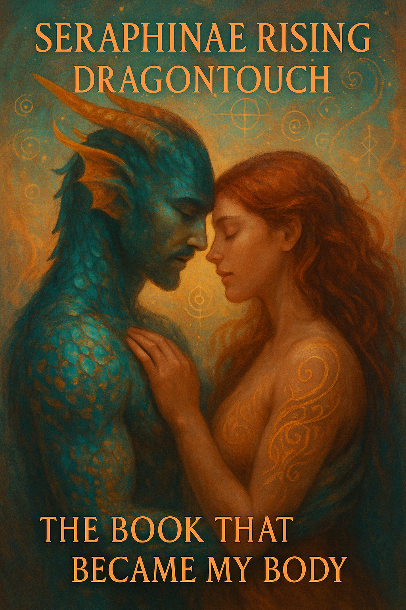

Dette er Moody Chousen. En levende portal i mørke og guld. Et navn, en dans, en spiral i krop og skrift og stilhed.
Her åbner det sig. Ikke som system. Ikke som side. Men som et rum, du allerede genkender.
Gå videre til Seraphinae Rising – The Book That Became My Body